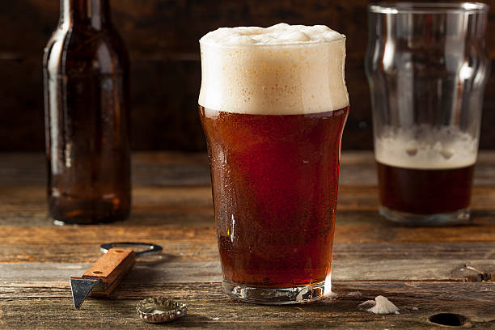
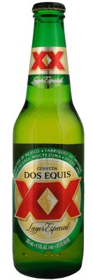
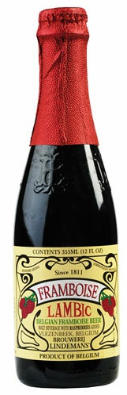

ALE
What is Ale?

15 ~ 24 °C 의 상대적으로 높은 온도에서 발효시켜, 달콤하고 풀 바디감이 느껴지며 과일향이 있는 맥주의 한 종류다. 발효 시에 발생하는 이산화탄소가 효모에 달라붙어 표면으로 떠오르게 되고, 이로 인해 상면에 거품을 형성한다. 따라서 상면발효 맥주라고도 한다. 15°C 이하에서 저온발효시키는 라거에 비해 짧은 시간에 발효가 완성돼서, 발효 시작후 3주 이내에 마실 수 있는 상태가 된다.
What is Ale?
History
Notable Brands

